Caslon
William Caslon I, also known as William Caslon the Elder,[1] was an English typefounder. The distinction and legibility of his type secured him the patronage of the leading printers of the day in England and on the continent. His typefaces transformed English type design and first established an English national typographic style.[2]
Though his name would come to be identified with an enduring style of Latin alphabet, Caslon's first typefaces were what contemporary typefounders called "exotics." His first design was an Arabic made at the English size (14pt), commissioned by the Society for Promoting Christian Knowledge before 1725, followed by a Hebrew created for William Bowyer in 1726, and a Coptic for Wilkins first used in 1731.
Caslon's typefaces were inspired by the Dutch Baroque types, the most commonly used types in England before Caslon's faces. His designs influenced John Baskerville and are thus the progenitors of the transitional and Didone typeface classifications.
Caslon typefaces were immediately popular and used for many important printed works, including the first printed version of the United States Declaration of Independence. Caslon's types became so popular that the expression about typeface choice, "when in doubt, use Caslon," came about. The Caslon types fell out of favour in the century after his death, but were revived in the 1840s. Several revivals of the Caslon types are widely used today.

Caslon
·Mosley, James (2008). "Caslon, William, the elder (1692–1766), typefounder". Oxford Dictionary of National Biography (Online ed.). Oxford: Oxford University Press. doi:10.1093/ref:odnb/4857. Retrieved 2014-10-12.
·Luna, Paul; Ould, Martyn (2013). "The Printed Page". In Gadd, Ian. Beginnings to 1780. History of Oxford University Press. 1. Oxford: Oxford University Press. pp. 515–516.
·Hill, Joseph (1971) [1907]. The Book Makers of Old Birmingham: Authors, Printers, and Book Sellers. New York: B. Franklin. pp. 56–57. ISBN 0833717065.
·"History of Printing", British Printing Society Retrieved on 29 April 2014.
·Updike, Daniel Berkeley (1922). Printing Types: Their History, Form, and Use, Vol. II. Cambridge: Harvard University Press. pp. 102–103. ISBN 1584560568.